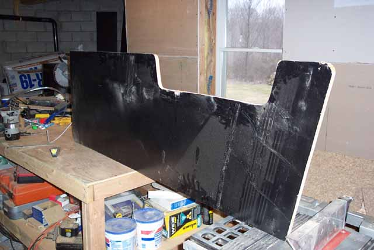
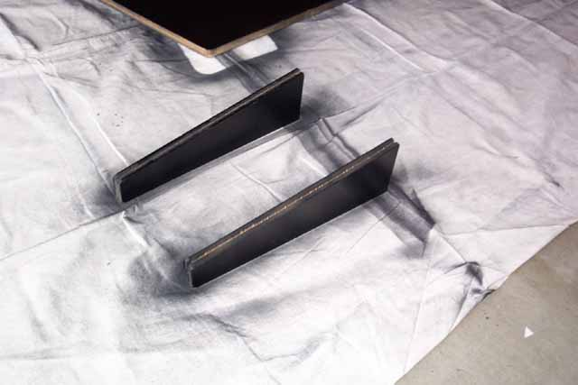
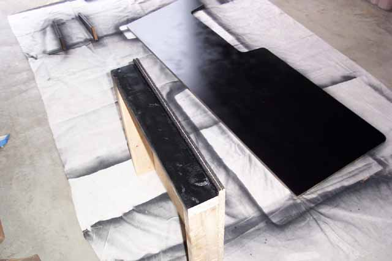

I did a test run of spray
paint on one side of the kiosk side panel before cutting it to see how
much paint and how many coatings it would take to get a nice finish and
also to see if it would hold up and not chip or scratch off easily.
Well the paint certainly passed the test well, so this is the definite
route to take for our coating. Next thing to do
once the side panel is sanded and in a finished shape is to lay down the
uncut panel, place the finished panel onto of it and trace the needed outlines
to cut the other panel.
Take the cut out sections from the side panels and lets put them to some good use. These will become the side panels for the control area. After looking at the photo, measuring the Astrocade (10.5" depth roughly) I went with a 14" depth and a 2" front panel. Cut two "wedges" at a 10" angle with a front side 2" high then 10 degree upward for a top side of 14" long.

Referring back to the Coleco Kiosk work, I used a router kit on my Craftsman Dremel tool and using a 1/8th inch router bit centered on the edge of the side panel and then 2 "wedges" I ran it down them and routed out the opening where the chrome T-Molding (Available from Happ Controls: www.happcontrols.com) .Take your first finished panel some place well ventilated and lets shoot a few coats of paint onto it and get it started. I sprayed the two "wedges" first, then proceeded to spraying the side panel.

Spray on the coatings as follows. Spray down one full coating just to cover the entire side panels, doesn't have to be perfect. Wait 15 mins, then spray on a 2nd more even coating. Again, wait another 15-20 mins and apply a 3rd and final even coating. Wait about 1 to 1 1/2 hours for a good dry surface, flip and repeat on the inside of the panel. I only applied 2 coats on the inside panel as its not going to be as visible. Give the front edges a light coating as well where the t-molding will be going, this way is has a clean, even look.